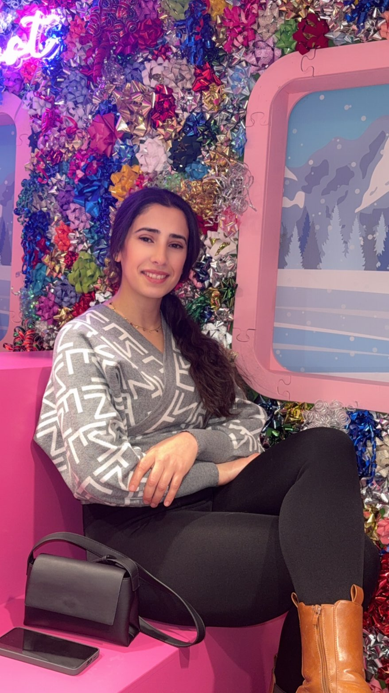

About Me
My name is Dahbia Amimer, and I am currently a student in the IMD program at Algonquin College. I am passionate about creativity, technology, and digital storytelling. I enjoy learning how design and code work together to create meaningful user experiences. Education has always been important to me, and I believe that consistent effort leads to long-term success.
Outside of school, I enjoy exploring visual design, photography, and new digital tools. I believe that practice and patience are essential for growth, especially in creative fields. My goal is to continuously improve my skills and build projects that reflect both technical knowledge and artistic expression. I am motivated to turn challenges into opportunities for learning and self-development.